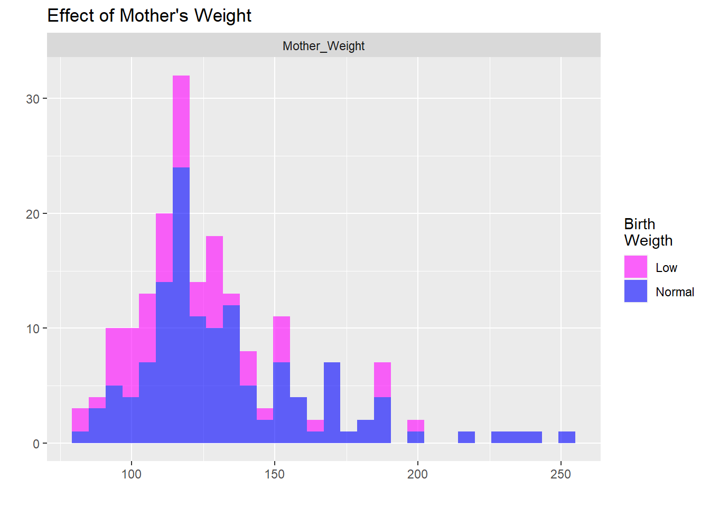

Low birthweight (weighing less than 2500 grams) is an outcome that has been of concern to physicians for years. This is due to the fact that infant mortality rates and birth defect rates are very high for low birthweight babies. A woman’s risk factors during pregnancy (including smoking habits, hypertension status, weight, etc.) can greatly alter the chances of carrying the baby to term and, consequently, of delivering a baby of normal birthweight. The variables identified in the file have been shown to be associated with low birthweight in the obstetrical literature. The goal of the current study was to ascertain if these variables were important in the population being served by the medical center where the data were collected.
Here we are going to perform a statistical analysis of the data to assess the independent effect of the four predictor variables on the dependent variable of low birthweight (birthweight < 2500 grams). We are going to perform both crude (unadjusted) and adjusted (multivariable) analysis. For the multivariable model, will retain all explored predictors in the model. Evaluate a potential interaction between mother’s weight at the last menstrual period and hypertension status.
Dataset of Birthweight can be found here .
Firstly, cleaned the data and checked for missing values. There were none. Formed a summary table of all the data inside and inspected it. It had all the mean , median, range and character type of each variables.
Then factorized and categorized suitable values. Categorized birthweight into ‘LOW’ and ‘NORMAL’.
Secondly, performed chisq-test and t-test with categorical and numerical variable, respectively. And incorporated p-values,associated mean, median and proportion and percentage of occurance with LOW and NORMAL birthweight into the table in SUMMARY TABLE ONE.
Thirdly, did univariate data analysis of all individual predictors with visualization.
Forth, did various linear and logistic regression modeling to get suitable final results to interpret which predictor is more significant.
Later categorized Mother’s age and weight in the last mensuration for further analysis.
Performed more multivariable regression model. Used backward selection process in GLM to conclude the best fit model.The final model includes Age as log(age) offset. It was cleared that age is not significant so its was offset from the model. It was better to offset rather than fully exclude from the model. Then plotted ROC curve to measure usefulness of the model with sensitivity ans specificity.
Evaluated association between Mother’s weight, hypertension status, and Babies birth weight using GLM binomial and plotted ROC curve and histogram of the combined effect..
For all hypothesis test and modeling, considered the level of significant to be 0.05, and confidence interval to be 95%.
In this dataset there is no missing data. The 4 predictors are low birthweight are Maternal Age (in years), Mother’s Weight at Last Menstrual Period (in pounds), Smoking Status and Hypertension Status of the mother. Birthweight is our response. Mean , Median, maximun and minimun are given below. Mother’s age range were from 14 to 45 at birth. There weight at last mensuration ranged from 80 to 250 pounds.
| name | type | na | mean | disp | median | mad | min | max | nlevs |
|---|---|---|---|---|---|---|---|---|---|
| Subject ID | numeric | 0 | 121.0794 | 63.3036338 | 123 | 80.0604 | 4 | 226 | 0 |
| Maternal Age (in years) | numeric | 0 | 23.2381 | 5.2986779 | 23 | 5.9304 | 14 | 45 | 0 |
| Mother’s Weight at Last Menstrual Period (in pounds) | numeric | 0 | 129.8201 | 30.5751501 | 121 | 20.7564 | 80 | 250 | 0 |
| Smoking Status | character | 0 | NA | 0.3915344 | NA | NA | 74 | 115 | 2 |
| Hypertension Status | character | 0 | NA | 0.0634921 | NA | NA | 12 | 177 | 2 |
| Birthweight (in grams) | numeric | 0 | 2944.2857 | 729.0160177 | 2977 | 819.8778 | 709 | 4990 | 0 |
Performed suitable hypothesis test. T-test with numeric data and chisq-test with categorical data to find which variable have significant associated with baby birth weight.
Mothers weight at last mensuration, smoking status are significant as there p-value is less than 0.05. And hypertension status, maternal age are not significant as there p-value is greater than 0.05.
| Low Birthweight (N=59) |
Normal Birthweight (N=130) |
P-value | |
|---|---|---|---|
| Maternal_Age | |||
| Mean (SD) | 22.3 (4.51) | 23.7 (5.58) | 0.078 |
| Median [Min, Max] | 22.0 [14.0, 34.0] | 23.0 [14.0, 45.0] | |
| Mother_Weight | |||
| Mean (SD) | 122 (26.5) | 133 (31.7) | 0.013 |
| Median [Min, Max] | 120 [80.0, 200] | 124 [85.0, 250] | |
| Smoking_Status | |||
| Non-smoker | 29 (49.2%) | 86 (66.2%) | 0.04 |
| Smoker | 30 (50.8%) | 44 (33.8%) | |
| Hypertension_Status | |||
| No Hypertension | 52 (88.1%) | 125 (96.2%) | 0.076 |
| Hypertension | 7 (11.9%) | 5 (3.8%) |
In this histogram plot, Mother’s age range from 14 to 45 and there associated baby birthweight is present .
There are large peaks at age- 17, 20, 21, 23-26 they have a higher rate of having low birth weight baby. It looks there are higher chance in low birthweight in younger age less than 26.
Fewer women give birth at an age lower than 16 and they have a higher risk of low birthweight babies. The rate of low birth weight decreases after age 25. Maybe because women get more educated and more cautious about pregnancies.
Overall from ages 16 to 26 and 28 onwards, there are many mothers with normal baby birth weight. There is a drop in age 26 and 27. Fewer women got pregnant at this age.
There is an outlier at age 45, being pregnant at this age is rare and on top, the baby had normal birth weight.
In Mother’s Weight distribution plot. Mothers with weight < 125 have a higher chance of low birth weight in their babies. See a spike at age 120 with normal birth weight and most birth. The rate of low birth decreases after weight 150.There are a few mothers with weight >175 are there are most likely to give birth with normal birth weight.

This shows there is small no. of the woman with hypertension and they have a higher rate in low birth weight comparatively. And mothers with no hypertension have a higher rate of having normal baby birth weight.
Non-smokers have a higher rate of normal birth weight. But mothers with smoking habits have a somewhat higher rate with normal birth weight but having low birth weight is also higher in smokers.
Here we can see a linear model for Birthweight(continuous) as a response with 4 predictors Mother’s age, weight at LM, smoking habit and hypertension status. Other than Age all 3 predictors are significant as p-value<0.05. They do influence there babies birth weight.
For an increase in Mother weight, the baby’s birth weight is expected to rise by 5.2 grams.
For Mothers with a smoking habit, the baby’s birth weight is expected to decrease by 262 grams compared to non-smokers and having other parameters constant. It has a great effect.
For Mothers with hypertension, the baby’s birth weight is expected to rise by 579 grams compared to patients with no hypertension disease.
This model is significant as its overall p-value <0.05 and with 10% variance. The model is valid.
##
## Call:
## lm(formula = Birthweight_Baby ~ . - Birthweight_Baby_Type - Subject_ID,
## data = Birthweight)
##
## Residuals:
## Min 1Q Median 3Q Max
## -2094.91 -431.77 5.57 506.68 1823.06
##
## Coefficients:
## Estimate Std. Error t value Pr(>|t|)
## (Intercept) 2285.929 297.107 7.694 8.39e-13 ***
## Maternal_Age 5.451 9.777 0.558 0.57784
## Mother_Weight 5.169 1.744 2.964 0.00344 **
## Smoking_StatusSmoker -261.851 104.062 -2.516 0.01271 *
## Hypertension_StatusHypertension -579.031 214.412 -2.701 0.00757 **
## ---
## Signif. codes: 0 '***' 0.001 '**' 0.01 '*' 0.05 '.' 0.1 ' ' 1
##
## Residual standard error: 696.9 on 184 degrees of freedom
## Multiple R-squared: 0.1055, Adjusted R-squared: 0.08607
## F-statistic: 5.426 on 4 and 184 DF, p-value: 0.0003753Here the model is built with the Birth weight(categorical) as Low and Normal. (adjusted) This model is similar to linear model. Here weight , smoking status and hypertension status is significant and have great influence over the babies birth weight.
Odds ratio are significant in those where there is no 1.0 in the confidence interval.
Odds ratio of weight is 1.017 means it has higher odds. As weight increase the baby have higher chance of normal birthweight. and its significant (valid as it contains 1.0 in 95% confidence interval.)
Odds ratio is smoking status is 0.5 means it is associated with lower odds. There is higher chance of smoking affecting birth rate and having low birthweight. Same for hypertension. AIC =230 means its a good model.
##
## Call:
## glm(formula = Birthweight_Baby_Type ~ . - Birthweight_Baby -
## Subject_ID, family = binomial(link = "logit"), data = Birthweight)
##
## Deviance Residuals:
## Min 1Q Median 3Q Max
## -2.2183 -1.1885 0.6577 0.8418 1.6916
##
## Coefficients:
## Estimate Std. Error z value Pr(>|z|)
## (Intercept) -1.764394 1.052241 -1.677 0.09358 .
## Maternal_Age 0.035717 0.033363 1.071 0.28437
## Mother_Weight 0.016928 0.006621 2.557 0.01057 *
## Smoking_StatusSmoker -0.678847 0.331921 -2.045 0.04083 *
## Hypertension_StatusHypertension -1.787067 0.685746 -2.606 0.00916 **
## ---
## Signif. codes: 0 '***' 0.001 '**' 0.01 '*' 0.05 '.' 0.1 ' ' 1
##
## (Dispersion parameter for binomial family taken to be 1)
##
## Null deviance: 234.67 on 188 degrees of freedom
## Residual deviance: 215.71 on 184 degrees of freedom
## AIC: 225.71
##
## Number of Fisher Scoring iterations: 4| Odds_ratio | 2.5 % | 97.5 % | |
|---|---|---|---|
| (Intercept) | 0.171 | 0.020 | 1.278 |
| Maternal_Age | 1.036 | 0.972 | 1.109 |
| Mother_Weight | 1.017 | 1.005 | 1.031 |
| Smoking_StatusSmoker | 0.507 | 0.263 | 0.971 |
| Hypertension_StatusHypertension | 0.167 | 0.040 | 0.618 |
Categorized mother’s age into Age<17, 17≤Age≤26, Age> 26.
Categorized mother’s weight at last mensuration into Weight<125, 125≤Weight≤200, Age>200. In Summary Two table, those categorized age and weight were insignificant as p-value>0.05. Only smoking status and weight(cintinous) are significant.
With the GLM full model performed a backward selection process to chose the best model.
The final model includes Age as log(age) offset. It was cleared that age is not significant so its was offset from the model. It was better to offset rather than fully exclude from the model.
In Summary Two table, those categorized age and weight were insignificant as p-value>0.05. Only smoking status and weight(cintinous) are significant.
| Low Birthweight (N=59) |
Normal Birthweight (N=130) |
P-value | |
|---|---|---|---|
| Maternal_Age | |||
| Mean (SD) | 22.3 (4.51) | 23.7 (5.58) | 0.078 |
| Median [Min, Max] | 22.0 [14.0, 34.0] | 23.0 [14.0, 45.0] | |
| Maternal_Age_Group | |||
| Age<17 | 5 (8.5%) | 8 (6.2%) | 0.14 |
| Age[17-26] | 45 (76.3%) | 85 (65.4%) | |
| Age>26 | 9 (15.3%) | 37 (28.5%) | |
| Mother_Weight | |||
| Mean (SD) | 122 (26.5) | 133 (31.7) | 0.013 |
| Median [Min, Max] | 120 [80.0, 200] | 124 [85.0, 250] | |
| Mother_Weight_Group | |||
| Weight [125-200] | 23 (39.0%) | 57 (43.8%) | 0.164 |
| Weight<125 | 36 (61.0%) | 67 (51.5%) | |
| Weight>200 | 0 (0%) | 6 (4.6%) | |
| Smoking_Status | |||
| Non-smoker | 29 (49.2%) | 86 (66.2%) | 0.04 |
| Smoker | 30 (50.8%) | 44 (33.8%) | |
| Hypertension_Status | |||
| No Hypertension | 52 (88.1%) | 125 (96.2%) | 0.076 |
| Hypertension | 7 (11.9%) | 5 (3.8%) |
With the GLM full model performed a backward selection process to chose the best model.
##
## Call:
## glm(formula = Birthweight_Baby_Type ~ . - Birthweight_Baby -
## Subject_ID, family = binomial(link = "logit"), data = Birthweight)
##
## Deviance Residuals:
## Min 1Q Median 3Q Max
## -2.1813 -1.1268 0.6383 0.8251 1.7135
##
## Coefficients:
## Estimate Std. Error z value Pr(>|z|)
## (Intercept) -1.68354 1.99094 -0.846 0.3978
## Maternal_Age -0.01358 0.06253 -0.217 0.8281
## Mother_Weight 0.01924 0.01162 1.655 0.0980 .
## Smoking_StatusSmoker -0.77890 0.34237 -2.275 0.0229 *
## Hypertension_StatusHypertension -1.89765 0.74493 -2.547 0.0109 *
## Maternal_Age_GroupAge[17-26] 0.40352 0.73221 0.551 0.5816
## Maternal_Age_GroupAge>26 1.09778 1.19559 0.918 0.3585
## Mother_Weight_GroupWeight<125 0.44293 0.54880 0.807 0.4196
## Mother_Weight_GroupWeight>200 14.80603 865.71034 0.017 0.9864
## ---
## Signif. codes: 0 '***' 0.001 '**' 0.01 '*' 0.05 '.' 0.1 ' ' 1
##
## (Dispersion parameter for binomial family taken to be 1)
##
## Null deviance: 234.67 on 188 degrees of freedom
## Residual deviance: 211.52 on 180 degrees of freedom
## AIC: 229.52
##
## Number of Fisher Scoring iterations: 15| Odds_ratio | 2.5 % | 97.5 % | |
|---|---|---|---|
| (Intercept) | 0.186 | 0.003 | 8.631 |
| Maternal_Age | 0.987 | 0.874 | 1.118 |
| Mother_Weight | 1.019 | 0.997 | 1.044 |
| Smoking_StatusSmoker | 0.459 | 0.233 | 0.895 |
| Hypertension_StatusHypertension | 0.150 | 0.029 | 0.600 |
| Maternal_Age_GroupAge[17-26] | 1.497 | 0.341 | 6.227 |
| Maternal_Age_GroupAge>26 | 2.998 | 0.285 | 31.628 |
| Mother_Weight_GroupWeight<125 | 1.557 | 0.528 | 4.583 |
| Mother_Weight_GroupWeight>200 | 2692632.091 | 0.000 | NA |
The final model includes Age as log(age) offset. It was cleared that age is not significant so its was offset from the model. It was better to offset rather than fully exclude from the model.
All predictors are significant as p-value<0.05. Log of Weight has positive effect on Birth weight. And smoking and hypertension have negative effect. Having hypertention reduced the baby birth weight be log odds by 1.7 unit. Odds ratio of smoking and hypertention are less than 1. Means the odds of having low birthweight in baby with smoking habit and hypertention is more likely.
##
## Call:
## glm(formula = Birthweight_Baby_Type ~ offset(log(Maternal_Age)) +
## log(Mother_Weight) + Smoking_Status + Hypertension_Status,
## family = binomial(link = "logit"), data = Birthweight)
##
## Deviance Residuals:
## Min 1Q Median 3Q Max
## -2.1549 -1.1934 0.6519 0.8475 1.6957
##
## Coefficients:
## Estimate Std. Error z value Pr(>|z|)
## (Intercept) -12.9311 4.1829 -3.091 0.00199 **
## log(Mother_Weight) 2.2847 0.8716 2.621 0.00876 **
## Smoking_StatusSmoker -0.6610 0.3328 -1.986 0.04703 *
## Hypertension_StatusHypertension -1.7309 0.6691 -2.587 0.00968 **
## ---
## Signif. codes: 0 '***' 0.001 '**' 0.01 '*' 0.05 '.' 0.1 ' ' 1
##
## (Dispersion parameter for binomial family taken to be 1)
##
## Null deviance: 232.35 on 188 degrees of freedom
## Residual deviance: 215.97 on 185 degrees of freedom
## AIC: 223.97
##
## Number of Fisher Scoring iterations: 4| Odds_ratio | 2.5 % | 97.5 % | |
|---|---|---|---|
| (Intercept) | 0.000 | 0.000 | 0.007 |
| log(Mother_Weight) | 9.823 | 1.903 | 58.985 |
| Smoking_StatusSmoker | 0.516 | 0.268 | 0.991 |
| Hypertension_StatusHypertension | 0.177 | 0.044 | 0.639 |
Area under the plot =0.6955. Its the normality check. It proves, it does do a good job in predicting Birthweight, AUC= 0.7 closer to 1 meaning it a good measure of separation. It is good in predicting Birthweight WITH case or control. It has 70% chance that model will be able to distinguish between positive case and negative case. Roc curve is left facing with more on the left upper side. Its an good curve.
##
## Call:
## roc.default(response = Birthweight$Birthweight_Baby_Type, predictor = Final_glm$fitted.values)
##
## Data: Final_glm$fitted.values in 59 controls (Birthweight$Birthweight_Baby_Type Low) < 130 cases (Birthweight$Birthweight_Baby_Type Normal).
## Area under the curve: 0.6955This is to evaluate the interaction between mother’s weight at last mensuration and hypertension associated with birthweight.
In logistic regression model both weight and hypertension are significant predictor of birh weight as p-value <0.05 . Did not choose categorical weight as predictor as there were not signiifcant in the model. Odds ratio of weigth = 1.01, means it has higher odds of having low birth weight at younger age. Odds ratio of hypertension = 0.015, means it has lower odds.
##
## Call:
## glm(formula = Birthweight_Baby_Type ~ Mother_Weight + Hypertension_Status,
## family = binomial(link = "logit"), data = Birthweight)
##
## Deviance Residuals:
## Min 1Q Median 3Q Max
## -2.1796 -1.2922 0.7385 0.8727 1.8591
##
## Coefficients:
## Estimate Std. Error z value Pr(>|z|)
## (Intercept) -1.447862 0.820898 -1.764 0.07777 .
## Mother_Weight 0.018629 0.006593 2.826 0.00472 **
## Hypertension_StatusHypertension -1.854477 0.700824 -2.646 0.00814 **
## ---
## Signif. codes: 0 '***' 0.001 '**' 0.01 '*' 0.05 '.' 0.1 ' ' 1
##
## (Dispersion parameter for binomial family taken to be 1)
##
## Null deviance: 234.67 on 188 degrees of freedom
## Residual deviance: 221.17 on 186 degrees of freedom
## AIC: 227.17
##
## Number of Fisher Scoring iterations: 4| Odds_ratio | 2.5 % | 97.5 % | |
|---|---|---|---|
| (Intercept) | 0.235 | 0.043 | 1.102 |
| Mother_Weight | 1.019 | 1.006 | 1.033 |
| Hypertension_StatusHypertension | 0.157 | 0.036 | 0.589 |
The model AUC=0.675.
It proves, it does do a good job in predicting Birthweight associated with hypertension and motheres weight at LM. AUC= 0.675 closer to 1 meaning it a good measure of separation. It is good in predicting Birthweight with case or control. It has 67.5% chance that model will be able to distinguish between positive case and negative case. Roc curve is left facing with more on the left upper side. Its an good curve.
##
## Call:
## roc.default(response = Birthweight$Birthweight_Baby_Type, predictor = weight_hyp$fitted.values)
##
## Data: weight_hyp$fitted.values in 59 controls (Birthweight$Birthweight_Baby_Type Low) < 130 cases (Birthweight$Birthweight_Baby_Type Normal).
## Area under the curve: 0.676It shows there were fewer women with hypertension in the study. And woman with hypertension and weight between 125 and 200 have higher chance of having child with birth weight.
It seems like mother’s weight, hypertension and smoking habit does influence bithweight. Low birthweight(<2500) is influenced with having hypertension, smoking habit and mothers weight being lower. As mothers’ weight increases birthweight increses. If a mothere has hypertension then there baby’s weight will be lower compared to non-hypertension woman. If the mother smokes then she does have a higher chance for having low baby birthweight.
Having a combination of hypertension and heavier mother’s weight does influences low birthweight.